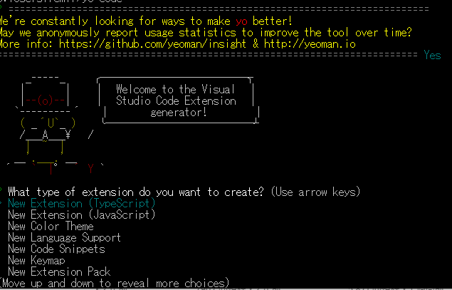
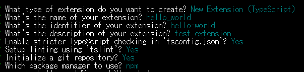
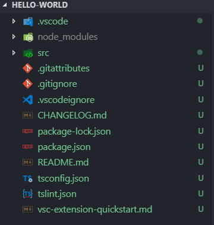
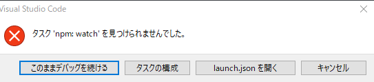
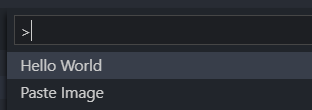

VSCode の拡張機能を作る
VSCode の拡張は TypeScript で作成する。
下準備
まず、Extension の基本的な構造を作るための準備をする。
npm install -g yo generator-code
yo code
npm を使用して、コマンドをインストール。 yo code で、実行できる。

プロジェクトを作成するルートフォルダに移動し、
移動先で yo code を実行すると、選択する Extension タイプがきかれるので、
「New Extension（TypeScript）」を選択する。

その後、プロジェクト名、フォルダ名、説明などなどきかれるので
Y を押していく。（基本は名前のみ決めれば OK）
実行が完了すると、カレントフォルダ下に指定の名前で
プロジェクトフォルダが作成される。
cd <作成したフォルダ名>
code .
最後に、作成したパッケージ内にコマンドプロンプトで移動したのち、
code . で VisualStudioCode を起動する。

追加すると、このようになる。

起動後、 F5 を押すことで、作成したコードが反映された VSCode が起動される。
ただし、自分の環境（1.30.0）状態だとなぜか ↑ のようなエラーが出てしまう。
どうやら、この画面は無視して「このままデバッグを続ける」を押しても
デバッグは実行可能だが、邪魔なので
launch.json 内の Extension の{}内にある
"preLaunchTask": "npm: watch"
この行をいったん削除する。
原因がわかり次第、元に戻す

F5 を押して表示される VSCode では、作成したコマンドがコマンドパレットに追加され
このように、コマンドに実行される。
中のプラグインの本体は src/extension.ts
本体と、VSCode をつないでいるのが package.json にあたる。
書き方は引き続き検証。